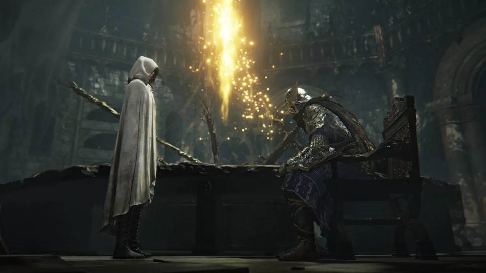

Elden Ring Nightreign
Elden Ring Nightreign pegou a todos de surpresa pela sua abordagem diferenciada em relação aos jogos da franquia Soulsborne.
Silksong é uma sequência direta de Hollow Knight, que se passa depois dos acontecimentos do primeiro jogo, e também aposta na fórmula metroidvania. A protagonista da vez é Hornet, que foi sequestrada e levada para um reino desconhecido e completamente novo. Esse reino é Pharloom, uma terra distante e ainda mais profunda do que Hallownest, que é regido por dois pilares: seda (“silk”) e música (“song”). Apesar de ser uma região diferente, a estética sombria é a mesma. Ao que tudo indica, o mapa da sequência será ainda maior do que o de Hollow Knight, com múltiplos biomas. Para efeitos de comparação, o jogo terá 100 bancadas de checkpoint contra 41 do antecessor. Cena de SilksongInício de Silksong mostra Hornet encontrando uma maneira de quebrar a jaula que a aprisiona Assim, o objetivo de Hornet é escapar para a superfície, enquanto desvenda os mistérios por trás de Pharloom e os motivos do seu sequestro. Novidades do gameplay Cena de SilksongPoder se curar no ar e, logo em seguida, desferir um golpe em pouquíssimos segundos faz Hornet ser capaz de combos incríveis Uma nova protagonista traz diferenças para a jogabilidade, principalmente porque Hornet é bem diferente do Cavaleiro, o protagonista de Hollow Knight. As habilidades continuam com o sistema personalizável de amuletos, mas Hornet é mais ágil e promete oferecer mais possibilidades para combinações rápidas de golpes. Além de ter um leque maior de mecânicas, como maior dano de área e até uma tirolesa improvisada. Cena de SilksongAo ser derrotada, Hornet larga um casulo que pode ser recuperado depois, algo parecido com o “fantasma” do Cavaleiro Hornet também se cura de uma forma diferente: acumulando seda e coletando almas dos inimigos (como o Cavaleiro). É preciso ter o suficiente dos dois recursos para restaurar a barra de vida, e a protagonista também é capaz de se curar no meio do ar. Por fim, a personagem tem voz e pode falar, o que indica uma quantidade bem maior de diálogos a todo momento. Plataformas confirmadas Cena de SilksongAinda não se sabe se o jogo chegará para o recém-anunciado Switch 2 Por meio de páginas das próprias marcas, Silksong já foi confirmado para PC e atuais consoles — incluindo PlayStation 4, PlayStation 5, Xbox One, Xbox Series X|S e Nintendo Switch. Além disso, o jogo entrará no catálogo do serviço Game Pass no dia do lançamento. Data de lançamento Cena de SilksongJá faz 84 anos… Após diversos adiamentos, Silksong ainda não tem previsão de lançamento.
Elden Ring Nightreign pegou a todos de surpresa pela sua abordagem diferenciada em relação aos jogos da franquia Soulsborne.
A NetEase Games, publicadora de Marvel Rivals, confirmou que ocorreram cortes na equipe sediada em Seattle.
A Grinding Gear Games revelou, na última quinta-feira (21), mais detalhes do Acesso Antecipado de Path of Exile 2.